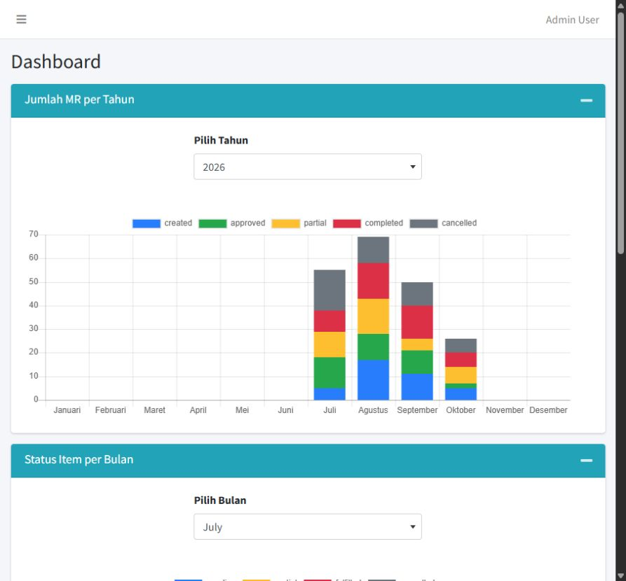
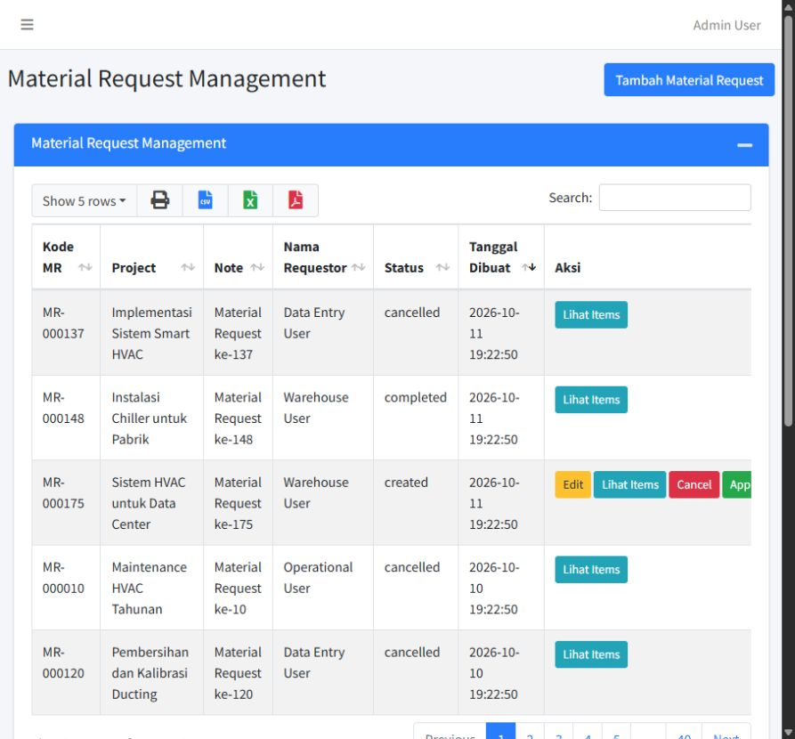

Material Request.
A clearer path from a material request to purchasing and warehouse fulfilment.
The context
A college thesis exploring how departments coordinate material needs, approvals, partial fulfilment, and warehouse records. I implemented the application, relational data model, permissions, master data, and reporting.
What I built
Request and item lifecycles; approval and cancellation; departmental roles; project/product management; dashboard aggregates. An isolated SQLite demonstration makes the academic work easier to reproduce.
Local production frontend build and 5 PHP tests passed. Checks cover guest access, permissions, seeded roles, chart endpoints, and fulfilment bounds. Screenshots use synthetic data. Production concurrency and record-level authorization need further review.
A closer look

